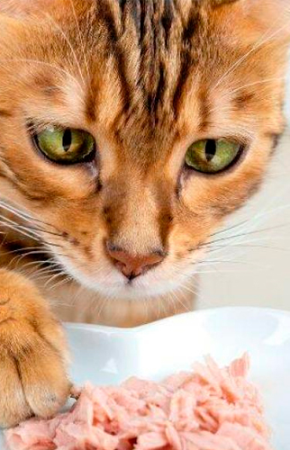
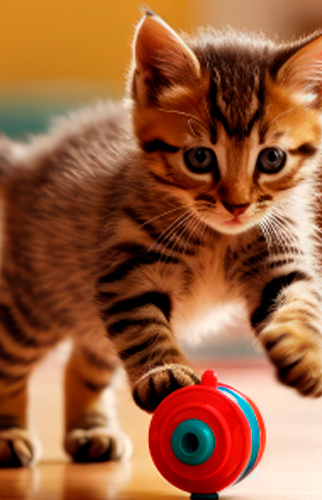
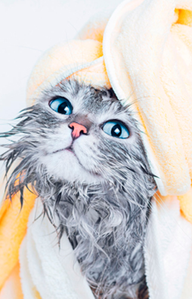
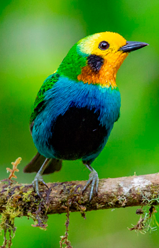
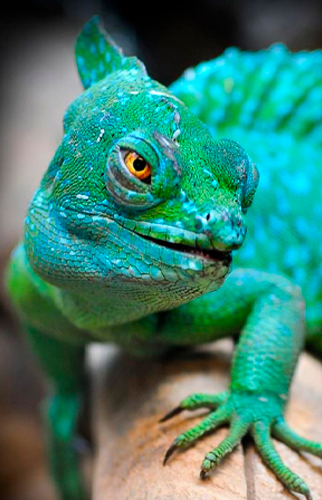

Es fundamental alimentar a tu perro con un pienso adecuado a su edad, tamaño y raza. Consulta a tu veterinario para elegir la mejor opción.
Los perros necesitan ejercicio diario. Paseos, carreras y juegos son esenciales para su salud física y mental.
Las visitas regulares al veterinario son clave para detectar cualquier problema de salud y mantener sus vacunas al día.

Los gatos necesitan una dieta rica en proteínas. Es importante asegurarse de que su comida contenga los nutrientes adecuados.

Los gatos son muy curiosos y activos. Proporciónales juguetes y actividades para estimular su mente y cuerpo.

La higiene de tu gato es esencial. Cepillarlos con regularidad y cuidar su caja de arena evitará problemas de salud.
Es importante proporcionar un ambiente limpio y adecuado para conejos, cobayas y otros pequeños mamíferos. Los espacios amplios y bien ventilados son clave.

Las aves necesitan una dieta balanceada y una jaula adecuada para su tamaño. Los juguetes para aves también son una excelente forma de entretenimiento.

Los reptiles requieren condiciones especiales como iluminación y calefacción adecuadas para mantenerse sanos. Consulta con un especialista para más detalles.